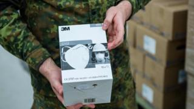

19.04.20
Live - Distanciamento social: até quando?
Essa pandemia pode ser um problema longo. Como vamos passar por isso e como a economia pode aguentar, se precisarmos de distanciamento social? Uma conversa com a economista Monica de Bolle...
17.04.20

Vemos luz no fim do túnel COVID-19?
Neste post, gostaria de compartilhar alguns dados e análises que me fazem pensar de forma mais otimista no que diz respeito à crise e, principalmente, no que diz respeito ao Brasil...
14.04.20
Boa notícia! Mais da metade dos infectados com coronavírus já estão curados no Brasil
Desde que o Covid-19 chegou no país, o Ministério da Saúde divulgou o número de casos confirmados, e a partir dele, agora pôde anunciar quantas pessoas já se recuperaram
04.04.20

Os EUA foram acusados de redirecionar para si mesmos um conjunto de 200 mil máscaras que tinha como destino original a Alemanha, em um ato descrito como "pirataria moderna"...
20.03.20
Live Coronavírus de 20/03 - O que o Brasil precisa fazer nos próximos dias #FiqueEmCasa
Atualizações sobre por onde o vírus tem circulado, no que o pronunciamento do Ministro da Saúde implica e como deve avançar a pandemia no Brasil.
19.03.20
Empresários pernambucanos doam aparelhos de ventilação
A disseminação do coronavírus é, neste momento, um problema de saúde pública, mas que naturalmente traz reflexos negativos para a economia. Cuidar do próprio negócio neste momento é fundamental, mas não impede de também olhar para o próximo...